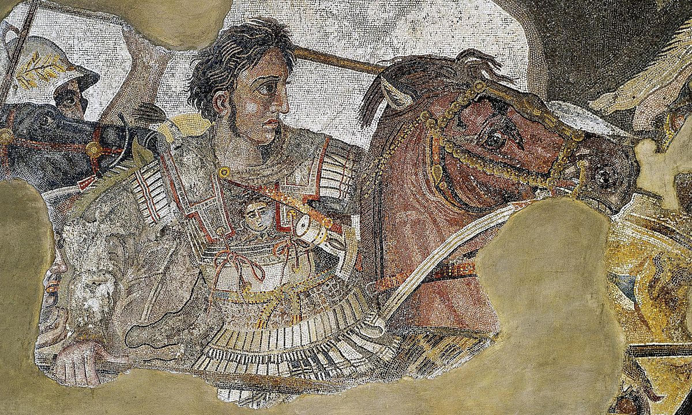

Source: WikipediaLegend has it that when Augustus Caesar, the deified first emperor of Rome, was an infant, he was brought to a Greek temple for a priest to read his future. Flames shot up from the altar, signifying from the gods that this baby would change the course of mankind. Such an omen had not occurred since hundreds of years before, when the same fate was bestowed upon Alexander the Great. King of the ancient Greek kingdom of Macedon, he created one of the largest empires in history at the ripe age of thirty with an undefeated record in battle. His rule stretched from Greece to India, with twenty cities in between that bore his name, the most notable one being Alexandria in Egypt. Along with the bloodshed and carnage that followed his conquests in the Mediterranean and Middle East was Greek culture, the foundation of Western civilization and which persisted through the Byzantine Empire in the 15th century and aspects of which could even be seen in the 20th century Ottoman Empire. He, like many other great generals had soldiers willing to die for him. At night he regaled his men with war stories and and in battle, he was always the first one to charge in, the first one over the wall. The wounds he suffered from his recklessness should have killed him, but they instead remained as visible proof of his legendary bravery, one that the Romans, from Caesar to Augustus to Scipio, would try to emulate. Reckless men who tell. entertaining stories end up becoming influential one way or another - just look at Donald Trump's 2016 presidential campaign.